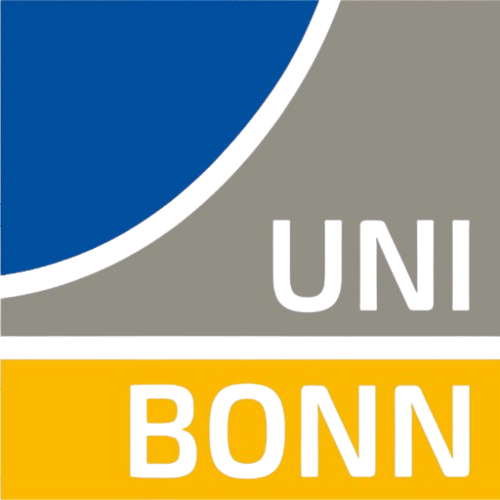

MSc CS · University of Bonn · AI & Deep Learning
I’m interested in...
// Press Resume to Start...
// Model: Neural Network...
University of Bonn · Bonn, Germany
Expected CGPA: ~ 1.3
Focus: Foundation models, transformer architectures, sequence modeling, and scientific machine learning.

Broadly, I'm interested in Portfolio risk management using Artificial Intelligence and Machine Learning algorithms, Large scale pre-training, Prompt engineering, Foundation models, Transformer architectures, Sequence modeling, Large Language Models (LLMs) Fine-tuning for specific domains, Distributed Deep Learning (PyTorch DDP, LoRA), and Multi-Agent Quantitative Decision Systems.
Experienced with constructing real-time multi-agent consensus pipelines where multiple agents coordinate and debate with each other for better decision making, fine-tuning compact LLMs for causal domain-specific sequence classification tasks on 570k+ samples, and optimizing the DDP pipeline for optimal hardware utilization across downstream tasks.
Active quantitative trading and deep momentum forecasting architectures currently under ongoing empirical research and execution development.
Multi-Agent Architecture · Multi-Timeframe Input Data · 3-Round Adversarial Debate
Analyzes the price-action of BTC using multi-timeframe OHLCV data combined with $1M Dollar Candles to provide agents with both macro-trend context and microstructure order-flow signals for high-probability trade execution.
Multi-Scale RoPE Attention · 4-State HMM Gate · Symmetric CUSUM
Institutional-grade Bitcoin direction & volatility-conditioned momentum forecasting framework trained across 5+ years (3.15M bars) of tick data with purged/embargoed cross-validation and L-BFGS calibration.
Completed empirical research benchmarks, sequence classification architectures, and computer vision systems.
Qwen3 (0.6B & 1.7B) · Cross-Genre Generalization · Adversarial Negation
Generative 3-way Natural Language Inference (entailment, neutral, contradiction) using decoder-only causal language models without auxiliary classification heads.
Cascaded YOLOv8 · SORT Kalman Trajectory · Inverted Binarization · Scipy Interpolation
Production-grade computer vision pipeline engineered for real-time multi-vehicle localization, SORT Kalman state estimation (7D kinematic vector), localized license plate detection, and EasyOCR with position-specific character disambiguation heuristics and Scipy 1D linear trajectory gap-filling.
Dynamic Region-of-Interest Cropping · High-Throughput Edge YOLOv8
High-throughput vehicle detection and highway traffic flow analytics system. Employs dynamic Region-of-Interest (ROI) spatial cropping to eliminate 68.8% of redundant pixel computation, boosting edge YOLOv8 inference speed by up to 2.43x while executing real-time multi-lane tripwire counters and directional vehicle telemetry.
Interactive 3D Solar Simulation · Keplerian Orbital Mechanics · Radial UV Rings
Interactive 3D Solar System simulation built with Three.js and WebGL. Features the Sun, all 8 celestial planets textured in 8K, custom radial polar UV mapping for Saturn's rings, a dynamic 100+ asteroid belt, collision-free camera zooming, and dual-layer real-time orbital time controllers.
Decoder Compact LLM as Classifier
Engineered a specialized sequence classification architecture on top of compact decoder-only causal language models (0.6B & 1.7B parameters). Rather than prompting the LLM to generate autoregressive text tokens, directly extracted the final token hidden state representations and routed them through a dedicated classification head to eliminate generation hallucination.
LoRA bfloat16) and PyTorch Distributed Data Parallel (DDP) with Ring-AllReduce synchronization across multi-GPU nodes.Software Development Engineer Intern
Autonomous Vehicle Localization & Tracking (Park-Vision AI)
Conducted bachelor's thesis research on edge-optimized multi-vehicle spatial localization, continuous temporal trajectory estimation, and automated number plate recognition (ANPR) on 1080p RTSP video streams.
SORT) algorithm
using 7-dimensional Kalman state vector modeling and Hungarian IoU matching, reaching 89% MOTA score.Available for AI/ML Engineering roles, Quantitative System Development & Research Collaborations